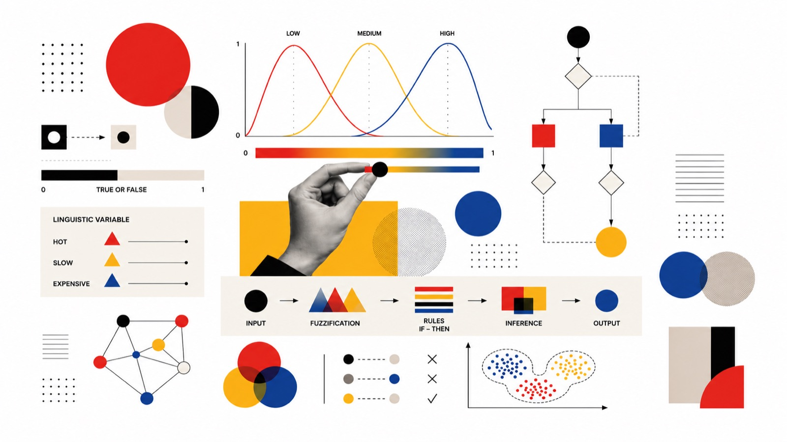

Quando un cliente dice “cerco una casa non troppo costosa”... cosa significa davvero?
“Abbastanza luminosa”, “non troppo lontana dal centro”, “un prezzo accessibile”. Per una persona sono richieste naturali; per un software tradizionale sono un problema. La Fuzzy Logic insegna all'AI a ragionare per sfumature.
Serie General Tech in Real Estate · 3 agosto 2026 · lettura 5 min
Ogni agente immobiliare lo sa: i clienti raramente esprimono le proprie esigenze con criteri perfettamente definiti.
“Vorrei una casa abbastanza luminosa.” “Non troppo lontana dal centro.” “Un quartiere tranquillo.” “Un prezzo accessibile.”
Per una persona, queste richieste sono naturali. Per un software tradizionale, invece, rappresentano un problema. Cosa significa “vicino”? Quanto è “economico”? Quando una casa può essere considerata davvero “luminosa”?
La maggior parte dei sistemi risponde utilizzando filtri rigidi: distanza massima, fascia di prezzo, numero di stanze. Ma il modo in cui le persone prendono decisioni è molto più sfumato.
Ed è proprio qui che entra in gioco la Fuzzy Logic.
Quando l'AI impara a ragionare come le persone
Negli anni '60 il matematico Lotfi Zadeh introdusse un concetto rivoluzionario: non tutto deve essere vero o falso. Esistono infinite sfumature.
La Fuzzy Logic nasce proprio con questo obiettivo: permettere ai sistemi intelligenti di interpretare informazioni qualitative, proprio come farebbe una persona.
Invece di classificare una casa come semplicemente “vicina” o “lontana”, può stabilire che un immobile sia vicino al centro al 75%, molto luminoso all'85% oppure economicamente interessante al 60%.
In altre parole, non elimina l'incertezza. La comprende.
Perché è così utile nel Real Estate?
Il mercato immobiliare è uno dei settori in cui le decisioni sono raramente binarie. Due appartamenti possono avere caratteristiche molto simili, ma essere percepiti in modo completamente diverso da due clienti. Ogni ricerca immobiliare è fatta di preferenze, compromessi e priorità.
Ed è proprio questa complessità che rende la Fuzzy Logic uno strumento estremamente efficace. Grazie a questo approccio è possibile:
- interpretare richieste formulate in linguaggio naturale;
- valutare il livello di compatibilità tra cliente e immobile;
- ordinare automaticamente gli immobili più pertinenti;
- supportare gli agenti nella ricerca delle migliori soluzioni.
Il risultato è una selezione molto più intelligente rispetto ai tradizionali filtri rigidi.
Oltre la ricerca immobiliare
La Fuzzy Logic non si limita alla ricerca degli immobili. Può essere applicata anche per:
- qualificare automaticamente un lead;
- stimare il livello di interesse di un cliente;
- supportare valutazioni immobiliari;
- suggerire le priorità commerciali;
- migliorare le raccomandazioni generate dall'AI.
Ogni decisione tiene conto non solo dei dati numerici, ma anche delle sfumature che caratterizzano il comportamento umano.
AI Generativa e Fuzzy Logic: una collaborazione naturale
Oggi si parla molto di AI conversazionale. Un AI Agent può dialogare con il cliente, comprenderne le esigenze e raccogliere informazioni. La Fuzzy Logic entra in gioco subito dopo: interpreta il significato delle richieste, valuta il grado di compatibilità con gli immobili disponibili e supporta decisioni molto più vicine al ragionamento di un consulente esperto.
L'AI comprende il linguaggio. La Fuzzy Logic interpreta le sfumature. Insieme offrono un'esperienza molto più naturale.
La visione di Hubique
In Hubique crediamo che l'Intelligenza Artificiale debba adattarsi al modo in cui lavorano le persone, non il contrario. Per questo sviluppiamo soluzioni in cui AI conversazionale, Machine Learning e logiche decisionali collaborano per aiutare le agenzie immobiliari a comprendere meglio i clienti, automatizzare i processi e supportare decisioni più intelligenti.
Il futuro del Real Estate non sarà fatto di risposte rigide. Sarà fatto di sistemi capaci di interpretare sfumature, preferenze e comportamenti. Perché le decisioni migliori non nascono sempre da regole assolute: nascono dalla capacità di comprendere la complessità del mondo reale.
Altri articoli di General Tech in Real Estate


Vuoi capire cosa significherebbe per la tua agenzia?
Il nostro staff può mostrarti, con i tuoi processi e i tuoi dati, dove i filtri rigidi del tuo gestionale possono lasciare spazio a una ricerca che ragiona come i tuoi clienti. Trenta minuti, senza impegno e senza slide di marketing.
Richiedi subito un approfondimento